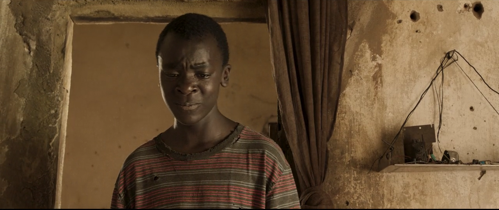
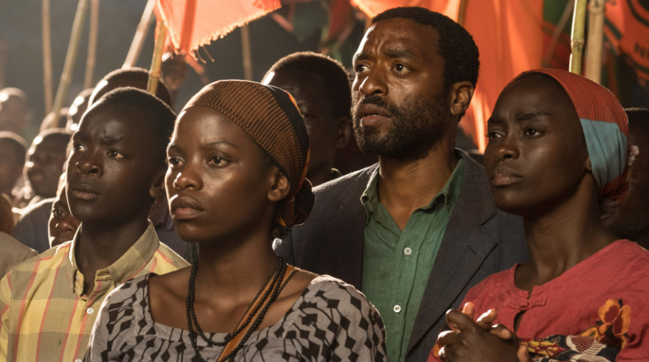
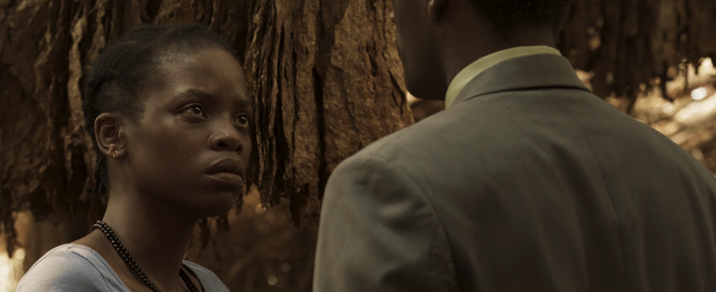
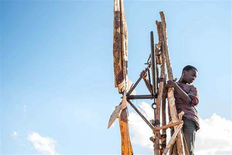

Para salvar de la hambruna a su pueblo, este joven con una mente curiosa se inspirará en un libro de ciencias para construir una turbina de viento. Así es como crea un aerogenerador y una bomba de agua, a partir de chatarra, con la única ayuda de su ingenio, perseverancia y unos pocos amigos que creyeron en él. Con ese molino su comunidad podrá regar los cultivos.
La película comienza con nuestro protagonista William, un niño interesado en la tecnología. William está intentando reparar una radio, pero no quiere que su papá se entere. Su papá le da de regalo un uniforme, y lo inscribe a una escuela, William se pone muy contento. William, ya saliendo del colegio, el profesor viene y le dice que su papá no ha pagado la cuota del colegio, y que si no lo hace pronto, ya no podrá asistir a clases.
En una reunión, el gobierno quiere comprar parte del terreno de la aldea. Al principio todos dicen que no, pero luego aceptan, ya que la cosecha ha decaído demasiado en los últimos tiempos, y no hay comida para el pueblo. Cuando termina la reunión, un amigo de William (El hijo del jefe), lo lleva a escuchar un partido en la radio con unos amigos mayores que él. Al principio, el resto no lo aceptan, porque es un niño, hasta que se acaba la batería de la radio antes de que empiece el juego. Todos están molestos, pero William con su ingenio, conecta las baterías de una forma diferente y termina arreglando la radio.
Todos lo felicitan y ya lo consideran parte del grupo. Ya de noche, William ve a su hermana con su profesor y deduce que están en una relación. El se molesta, ya que sabe que por leyes de su aldea, su hermana no puede estar en una relación hasta que termine la universidad. Al siguiente día, William ve la bicicleta del profesor. Iba a desmantelarla hasta que, ve que su lámpara se enciende con el movimiento de los pedales. Él se impresiona por esto.
Ya de noche, escucha a su papá diciéndole a su madre que no puede pagar la escuela, y casi ni la comida. Ya que, la cosecha no fue para nada bien. Y temen a que si no vuelve a llover, llegará una época de extrema hambruna. La lluvia llega y la aldea se inunda. Esto es porque el gobierno había comprado los terrenos de la aldea para talar los árboles, y estos árboles eran los que evitaban que el pueblo se inundara. Tras terminar la lluvia, llegó una gran sequía, por lo que no llegó a sembrarse casi nada. William, al ver esto, decide hacer algo. Con un motor que encontró en la basura, se le ocurre crear una bomba, para sacar agua del pozo. Pero necesita energía para conseguirla.
William se infiltra en el colegio y consigue ayuda del profesor, después de amenazar con revelar la relación que tiene con su hermana, consigue entrar a la biblioteca y encuentra el libro que quería. De regreso a su casa, William ve cómo el gobierno está llevando unos granos de maíz al pueblo. Su mamá le dice que vaya a comprar todos los que pueda. William había conseguido 15 kilos de maíz, pero se da cuenta que solo podrán comer comer una vez al día. William, enojado por la situación, decide crear la bomba de agua, le dice a su hermana que le pida al profesor un artefacto.
Al día siguiente, toda la familia está triste porque se enteran que la hermana de William se fue con el profesor. William va al cuarto de su hermana y ve que le dejó el artefacto que le prometió. William les habla a sus amigos sobre los molinos de viento, y cómo pueden generar energía para conseguir agua. Todos van buscando piezas para construir un pequeño molino. Con el molino pequeño terminado, William lo usa como demostración, para explicarle a su papa, que puede hacer uno más grande y generar agua. Pero para eso necesita su bicicleta, a lo que su papá no acepta, ya que el solo quiere ayudar en la cosecha.
Más tarde, esto hace una discusión familiar, en la que su papá reflexiona y decide confiar en William. Ya que es su última oportunidad. El pueblo termina el molino exitosamente. Tras unas horas ven como el motor ya genera agua. Todos se alegran, porque ahora podrán cosechar y sobrevivir al hambre de la que tanto han sufrido.
